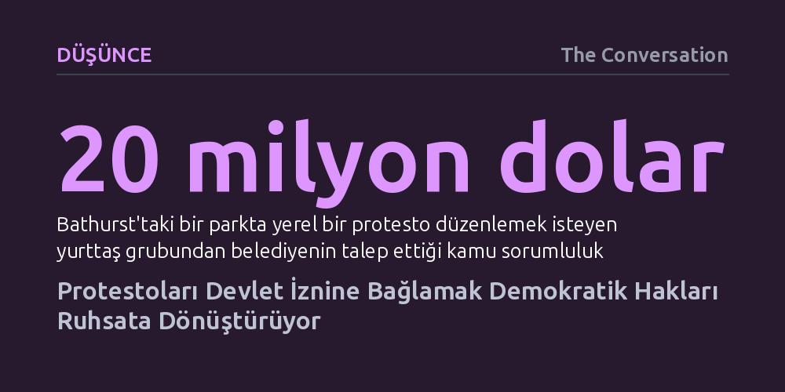

DUSUNCE · The Conversation · 2026-10-14
Avustralya genelinde protestoların fiilen devlet iznine bağlanması, kamu düzenini sağlamadığı gibi itiraz hakkını ağır cezalar ve maliyetlerle suç haline getiriyor. Araştırmalar, izin zorunluluğunun aksamaları azaltmadığını ve çözümün izne dayalı ruhsatlandırma yerine orantılı bildirim sistemine dönmek olduğunu gösteriyor.
Barışçıl gösteriler için yetkililerden izin alma zorunluluğunun kamu güvenliğini artırmadığını, aksine temel bir demokratik hakkı idarenin keyfi onayına bağlı bir ayrıcalığa indirgediğini gösterir.

New South Wales eyaletindeki Bathurst kasabasında küçük bir yerel grup, yabani atların itlaf edilmesini protesto etmek amacıyla parkta mütevazı bir gösteri yapmak istediğinde beklenmedik bir bürokratik duvarla karşılaştı. Yerel belediye, grubun toplanabilmesi için 20 milyon dolarlık kamu sorumluluk sigortası yaptırmasını şart koştu. Benzer engeller Bendigo'dan Adelaide'a kadar Avustralya'nın birçok kentinde tekrarlandı. Ortada stadyum dolduran ticari bir organizasyon yoktu; sadece yurttaşların kamusal bir alanda hükümetin bir uygulamasına itiraz etme iradesi vardı.
Mali ve idari engeller bununla da sınırlı kalmıyor. Darwin'de yerli halk topluluğu Uprising of the People, geleneksel İstila Günü yürüyüşünden yalnızca beş gün önce 8.000 dolarlık bir 'trafik kontrol' faturasıyla yüzleşti ve etkinliği yapabilmek için bağış toplamak zorunda kaldı. Alice Springs'te ise yurttaşların gösteri başvurusunda bulunabilmesi için, onay garantisi dahi verilmeyen 109 dolarlık bir başvuru harcını peşin ödemesi gerekiyor.
Demokratik itiraz hakkı giderek ağır para cezaları, hapis tehdidi ve polis müdahalesiyle çevrelenmiş pahalı bir izne dönüştürülüyor. Bu durumun yarattığı külfet ise en çok karmaşık formları, sigorta primlerini ve bürokratik takvimleri yönetme imkânı bulunmayan küçük gönüllü kampanyalara, göçmenlere ve yerli topluluklara yükleniyor.
Protesto süreçlerindeki krizin temelinde, 'bildirim sistemi' ile 'izin sistemi' arasındaki farkın kasten ya da fiilen silinmesi yatıyor. Bildirim sistemi, yürüyüşün güvenle yapılabilmesi ve trafiğin ayarlanabilmesi için polise önceden haber verilmesini öngörür. İzin sistemi ise tam tersine, devlet açık onay vermedikçe gösteriyi hukuken korumasız bırakır ve fiilen yasa dışı kılar. Avustralya'nın da imzacısı olduğu Birleşmiş Milletler Medeni ve Siyasal Haklara İlişkin Uluslararası Sözleşmesi yalnızca bildirim modeline izin verirken, izin şartının protestoyu temel bir hak olmaktan çıkaracağı konusunda uyarır.
Avustralya bu dersi geçmişte acı tecrübelerle öğrenmişti. 1970'ler ve 80'lerde Vietnam Savaşı ve ayrımcılık karşıtı gösterilerin sert polis şiddetiyle dağıtılmasının ardından hükümetler, benzer çatışmaları önlemek amacıyla bildirim sistemlerini devreye sokmuştu. Amaç, göstericileri korumak ve onları yolları kapatma gibi genel suçlamalardan muaf tutmaktı.
Bugün ise sistem tersine dönmüş durumda. 'Gönüllü' olarak adlandırılan düzenlemeler dahi cezaların ağırlığı nedeniyle zorunlu izin mekanizmalarına dönüştü. New South Wales'te bir yolu, tren istasyonunu veya hafif raylı hattı engellemenin cezası 22.000 dolar para ve iki yıl hapse kadar uzanıyor; Güney Avustralya'da kamusal alanı tıkamanın cezası 50.000 doları buluyor. Üstelik NSW Yüksek Mahkemesi, izin mekanizması kapsamında 'yasaklanan' bir gösteriye katılmayı doğrudan mahkemeye itaatsizlik suçu sayarak tutuklama gerekçesi haline getirdi.
Hükümetler ve emniyet birimleri izin sistemlerini savunurken her zaman aynı gerekçeyi öne sürüyor: Şehir yaşamındaki aksamaları en aza indirmek ve polis kaynaklarını korumak. Ancak Australian Democracy Network ile Deakin Üniversitesi Hukuk ve Koruma Merkezi'nin yürüttüğü kapsamlı araştırma, bu savunuyu destekleyecek hiçbir ampirik kanıt bulunmadığını ortaya koyuyor.
Şehir merkezindeki caddeler için izin şartı aramayan Melbourne ile katı bir izin rejimi işleten Sydney karşılaştırıldığında, her iki kentte de benzer sayıda büyük kitlesel protesto gerçekleştiği görülüyor. Melbourne Belediyesi verileri de gösterilerin kent merkezindeki yaya trafiğini veya ekonomik canlılığı kaçırdığına dair somut bir tablo ortaya koymuyor.
Bunun yanı sıra izin dayatması kamu kaynaklarını korumak bir yana, daha fazla israfa yol açıyor. NSW Polisi, 2023 yılından bu yana protestoları yargı yoluyla durdurabilmek adına en az üç kez dava açtı ve 300.000 dolardan fazla kamu parası harcadı; buna karşın tek bir gösteriyi bile engelleyemedi. İzin almadığı gerekçesiyle barışçıl göstericilere cop ve biber gazıyla müdahale edilmesi, toplumsal güveni zedeleyerek çatışma riskini daha da tırmandırıyor.
Uluslararası ölçekte benzer hukuk sistemlerine bakıldığında Avustralya'daki baskıcı eğilimin istisnai olduğu görülüyor. Birleşik Krallık, Amerika Birleşik Devletleri, Kanada, Yeni Zelanda ve Güney Afrika gibi ülkelerde kamusal sokaklarda protesto düzenlemek kural olarak devletin iznine tabi tutulmuyor; yargı mercileri bu yöndeki kısıtlama girişimlerini temel haklara aykırı bularak geçersiz kılıyor. Nitekim Avustralya anayasa yargısı da siyasi iletişim özgürlüğünü orantısız biçimde kısıtlayan benzer yasaları iptal edebiliyor.
Bu tablo, organizatörlerin yetkililerle hiçbir temas kurmaması gerektiği anlamına gelmez. Güzergâhların önceden paylaşılması, yol kapatmalarının planlanması ve katılımcı güvenliğinin sağlanması açısından şüphesiz faydalıdır. Ancak yapılması gereken, sistemi kuruluş amacına döndürmektir: Fiili izin rejiminin terk edilerek yerine açık, ölçülü ve kolaylaştırıcı bir bildirim mekanizmasının getirilmesi şarttır.
Toplanma hakkının özünü hatırlatan temel ilke son derece yalındır: "Protesto bir ruhsat değil, haktır." Önceden kimseden onay istenmedi diye hiçbir barışçıl gösteri gayrimeşru ilan edilmemeli; kendiliğinden gelişen sivil tepkiler suç sayılmamalı ve kolluk kuvvetleri göstericileri güç kullanarak değil, iletişim ve gerilimi düşürme odaklı bir yaklaşımla karşılamalıdır.